Aktuálna ponuka
Nehnuteľnosti, ktoré ponúkam
16 nehnuteľností na predaj a prenájom. Vyberte typ, alebo napíšte lokalitu.
16 z 16 ponúk
 DomNové10
89 990 €TOP ponuka! Príjemný rodinný dom vhodný na nasťahovanie
Machulince
110 m²
SHARK REAL Vám v exkluzívnom zastúpení ponúka na predaj príjemný 3-izbový rodinný dom, nachádzajúci sa v tichej lokalite obce Machulince, len pár…
DomNové10
89 990 €TOP ponuka! Príjemný rodinný dom vhodný na nasťahovanie
Machulince
110 m²
SHARK REAL Vám v exkluzívnom zastúpení ponúka na predaj príjemný 3-izbový rodinný dom, nachádzajúci sa v tichej lokalite obce Machulince, len pár…
 Dom10
83 000 €Dva rodinné domy na predaj v centre Žarnovice
Žarnovica
160 m²
SHARK REAL Vám v EXKLUZÍVNOM zastúpení ponúka na predaj dva rodinné domy v centre mesta Žarnovica, len 2 minúty od zjazdu diaľnice. Nehnuteľnosti sa…
Dom10
83 000 €Dva rodinné domy na predaj v centre Žarnovice
Žarnovica
160 m²
SHARK REAL Vám v EXKLUZÍVNOM zastúpení ponúka na predaj dva rodinné domy v centre mesta Žarnovica, len 2 minúty od zjazdu diaľnice. Nehnuteľnosti sa…
 Pozemok2
92 000 €Krásny pozemok na predaj len 10 minút od Nitry
Neverice
800 m²
SHARK REAL ponúka na predaj krásny stavebný pozemok s výmerou 8 árov neďaleko krásnej prírody pohoria Tribeč, len 10 minút autom do Zlatých Moraviec…
Pozemok2
92 000 €Krásny pozemok na predaj len 10 minút od Nitry
Neverice
800 m²
SHARK REAL ponúka na predaj krásny stavebný pozemok s výmerou 8 árov neďaleko krásnej prírody pohoria Tribeč, len 10 minút autom do Zlatých Moraviec…
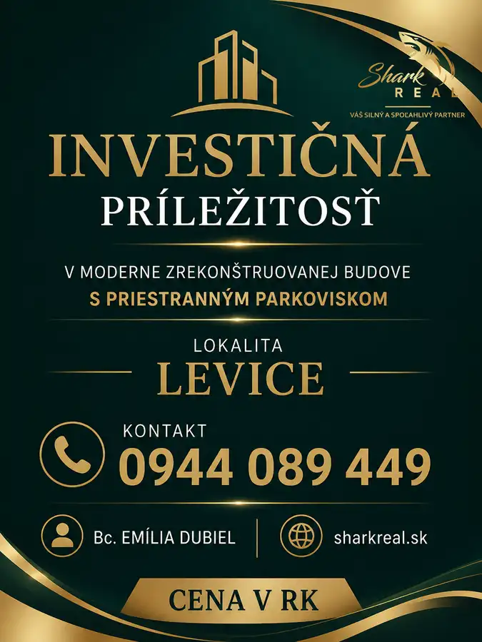
Komerčné priestory 1 890 000 €Investičná príležitosť v modernej budove s parkoviskom Levice 500 m² SHARK REAL Vám v exkluzívnom zastúpení ponúka na predaj kompletne zrekonštruovanú polyfunkčnú budovu v Leviciach s priestranným parkoviskom.Bližšie…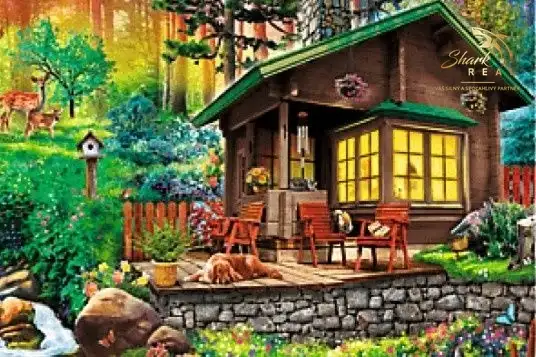
Chalupa, rekreačný domček3 93 000 €Nádherná záhrada s chatou neďaleko pohoria Tribeč Neverice SHARK REAL ponúka na predaj krásnu záhradu s chatou o výmere 7 árov, neďaleko krásnej prírody pohoria Tribeč, len 10 minút autom do Zlatých Moraviec…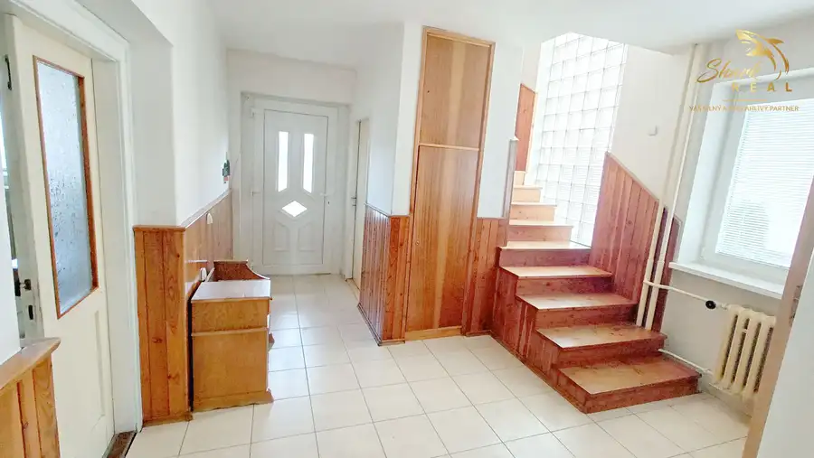
Dom10 198 000 €Priestranný rodinný dom s veľkou záhradou v TOP lokalite! Zlaté Moravce 160 m² Realitná kancelária SHARK REAL vám ponúka predaj čiastočne zrekonštruovaný rodinný dom, nachádzajúci sa v pokojnej časti mesta Zlaté Moravce. Táto…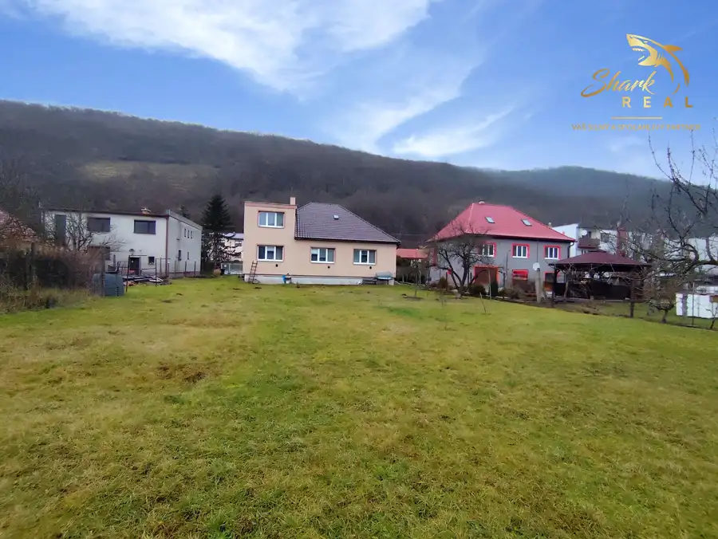
Dom10 149 900 €Rodinný dom s veľkorysým investičným pozemkom Hronský Beňadik 120 m² SHARK REAL Vám ponúka na predaj útulný rodinný dom na veľkorysom pozemku o výmere 1740 m2 a veľkým potenciálom v obci Hronský Beňadik, v krásnom…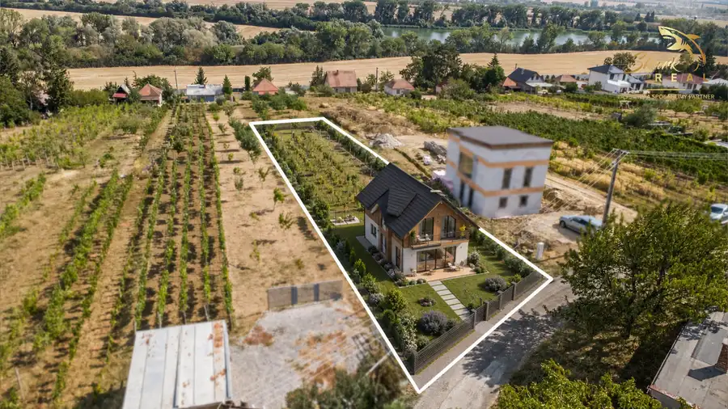
Pozemok10 58 000 €Slnečný pozemok s viničom a nádherným výhľadom Vráble 1250 m² SHARK real Vám v exkluzívnom zastúpení ponúka na predaj slnečný pozemok o výmere 1250 m2, nachádzajúcu sa vo vinohradníckej oblasti Dušnok, neďaleko…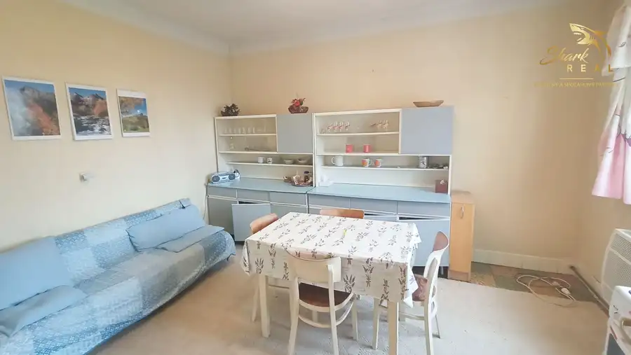
Dom10 136 999 €TOP lokalita! Rodinný dom v Topoľčiankach Topoľčianky 100 m² SHARK REAL ponúka na predaj priestranný rodinný dom vhodný na chalupu alebo trvalé bývanie, vo vyhľadávanej a tichej lokalite obce Topoľčianky,…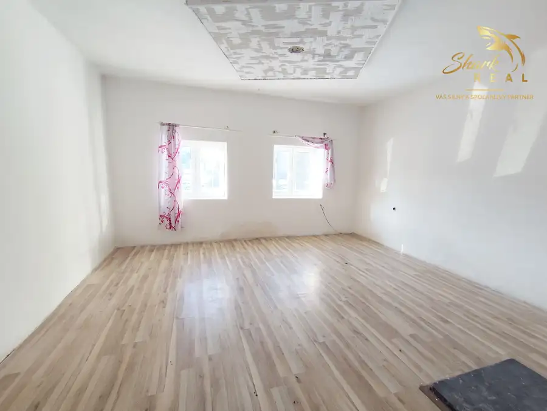
Dom10 127 000 €Rodinný dom v TOP lokalite na predaj Bzenica 120 m² SHARK Real Vám v exkluzívnom zastúpení ponúka na predaj 4 izbový rodinný dom, ktorý sa nachádza v tichej lokalite obce Bzenica, obklopený prírodou…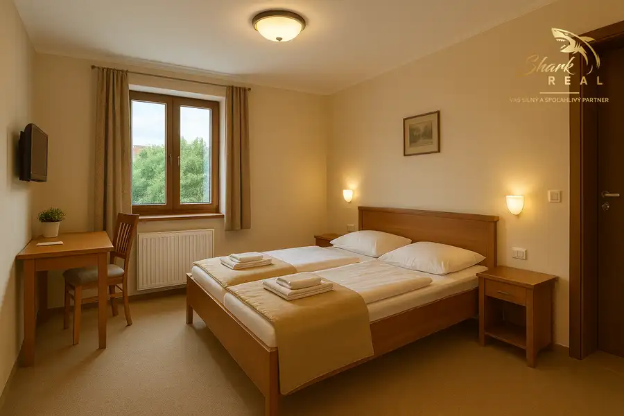
Komerčné priestoryNové2 Cena dohodouPenzión s reštauráciou v pokojnej lokalite Nitrianskeho kraja Nitra 620 m² SHARK REAL vám ponúka na predaj zabehnutý penzión s reštauračnou prevádzkou, situovaný v príjemnom vidieckom prostredí v okrese Nitra. Nehnuteľnosť… BytNové
Cena dohodouPONÚKNITE 2/3-izbový byt v Zlatých Moravciach
Zlaté Moravce
2-izbový
SHARK REAL hľadá pre konkrétneho klienta 2 až 3-izbový byt ideálne v zrekonštruovanom stave.Preferovaná lokalita je mesto Zlaté Moravce a Vráble…
BytNové
Cena dohodouPONÚKNITE 2/3-izbový byt v Zlatých Moravciach
Zlaté Moravce
2-izbový
SHARK REAL hľadá pre konkrétneho klienta 2 až 3-izbový byt ideálne v zrekonštruovanom stave.Preferovaná lokalita je mesto Zlaté Moravce a Vráble…
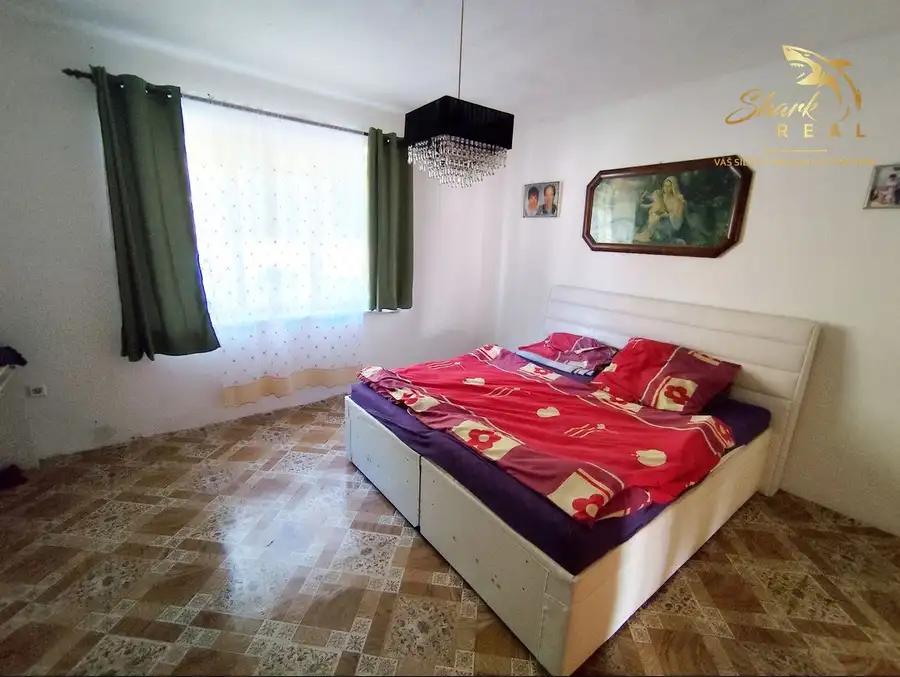
Pozemok10 Cena dohodouStavebný pozemok so starším domom na predaj Mojmírovce 1622 m² SHARK REAL ponúka na predaj rozsiahly pozemok o výmere 1622 m2. Na pozemku sa nachádza poschodový rodinný dom a je situovaný v tichej časti obce…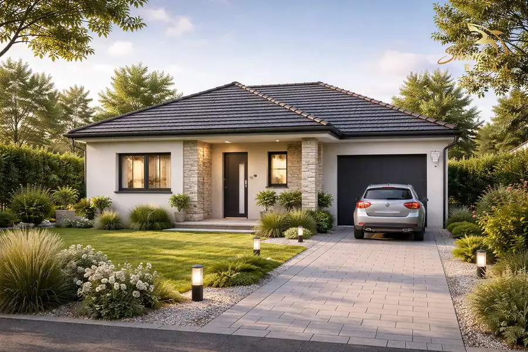
Dom Cena dohodouPONÚKNITE minimálne 3-izbový rodinný dom v Novej Bani Nová Baňa SHARK REAL hľadá pre konkrétneho klienta minimálne 3-izbový rodinný dom ideálne v čiastočne zrekonštruovanom stave.Preferovaná lokalita je Nová Baňa…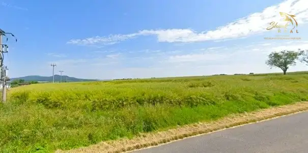
Pozemok5 49 000 €Stavebné pozemky neďaleko Nitry Neverice 900 m² SHARK REAL ponúka na predaj veľké a široké stavebné pozemky s výmerou od 7 až 10 árov neďaleko krásnej prírody pohoria Tribeč, nachádzajúce sa len 10…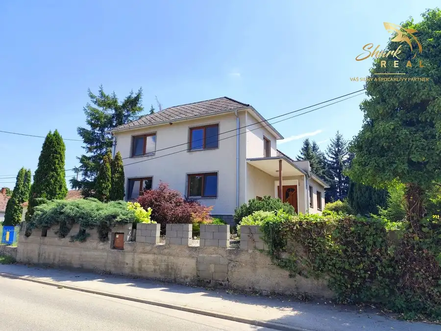
DomPredané10 PredanéVýnimočný dvojgeneračný dom na predaj Sľažany 192 m² SHARK REAL Vám exkluzívne ponúka na predaj veľkorysý rodinný dom v obci Sľažany, blízko Zlatých Moraviec. Pozemok je rovinatý a celkovú rozlohu má…Tomuto výberu zatiaľ nezodpovedá žiadna ponuka. Napíšte mi, čo hľadáte.